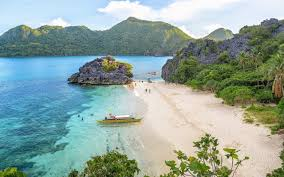

Caramoan Island is a pristine region in the Philippines, which could be likened to El Nido in Palawan. We traveled to Caramoan from Legazpi, and were blown away by the beautiful islands and cliffs. It’s on the southeastern part of Luzon, the largest and most populous island in the Philippines. The island is known for its beautiful beaches, clear waters, and diverse marine life. It has also been a popular location for various international editions of the “Survivor” television series.
Its pristine azure waters stretch out to the Maqueda Channel and the Lagonoy Gulf. Caramoan Islands is also renowned for its enchanting flora and fauna, as it is well-endowed with a 4,000 hectare limestone forest.

Menu
Click the image to view a larger version